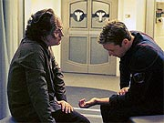
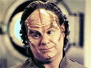
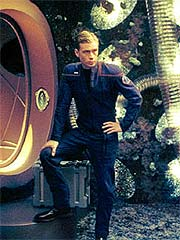
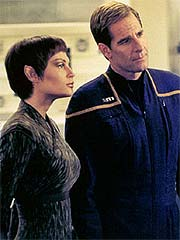
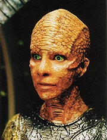
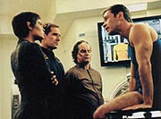
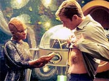
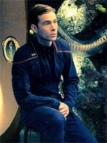
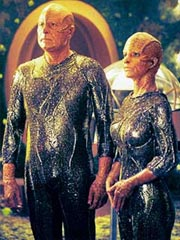

Episdio
anterior | Prximo
episdio
Sinopse:
Vrios sistemas da Enterprise
comeam a falhar, preocupando a tripulao. Aps algumas
investigaes, T'Pol descobre que h algo logo atrs da nave,
distorcendo o campo de dobra --o que poderia ser a causa para os
defeitos. Na tentativa de descobrir do que se trata, Archer ordena
que um torpedo provoque a ignio do plasma atrs da nave. O
procedimento revela uma nave camuflada.

Ao serem
descobertos, os aliengenas respondem, esclarecendo que no tinham
intenes hostis, e estavam apenas "pegando carona" no
campo de dobra da Enterprise, uma vez que seu prprio motor de
dobra estava defeituoso. Archer avisa que o procedimento est
danificando sua nave, mas se oferece para ajudar. Ele envia seu
engenheiro-chefe, Charles Tucker, para consertar o motor da nave
aliengena.
Aps um penoso perodo de descompresso que durou trs horas,
Tucker adentra o veculo aliengena --pertencente aos Xyrillianos.
Ele se sente muito mal a princpio, mas aps um breve descanso,
j volta a estar apto para trabalhar no problema. Durante o
perodo de aclimatao, ele ajudado por Ah'Len, a
engenheira-chefe da nave.

Os dois
rapidamente se pem a trabalhar juntos e logo conseguem restaurar o
sistema. Durante as duas horas em que seria necessrio esperar que
o ncleo voltasse a operar, a engenheira decide levar Tucker para
conhecer uma de suas tecnologia --uma sala capaz de criar
projees hologrficas incrvelmente precisas, realistas e
slidas. Ela primeiro demonstra o equipamento recriando seu
prprio planeta. Depois, transporta os dois para um barco, onde
eles praticam o que ela descreve como um jogo: os dois colocam as
mos em uma espcie de bacia cheia de cristais, e ento so
capazes de sondar os pensamentos um do outro.
Durante a "partida", os dois so chamados de volta
engenharia, onde so informados de que os reparos tiveram sucesso.
Tucker se despede de sua mais nova amiga e volta Enterprise. Mas
logo algo estranho comea a acontecer --uma pequena pretuberncia
surge no pulso do engenheiro. Ao consultar o doutor Phlox, ele
descobre com surpresa que aquilo na verdade um mamilo, e que ele
est grvido.

Archer e T'Pol so
chamados a enfermaria para serem postos a par da situao. Tucker
jura que no teve nenhum contato sexual com outros membros de sua
espcie, apesar das crticas speras de T'Pol para com ele. Ele
revela que participou desse "jogo", e Phlox concluiu que
esse poderia na verdade ser o mtodo de procriao utilizado
pelos Xyrillianos. Os quatro decidem manter a situao
constrangedora de Tucker em segredo, pelo menos enquanto uma
resoluo no atingida.
Diante das circunstncias, Archer decide procurar pela nave
aliengena, para descobrir como ajudar seu engenheiro. Aps mais
de uma semana de buscas, a nave foi localizada --camuflada e
acompanhando o trao de dobra de um cruzador de batalha Klingon. Ao
que parece, o conserto de Tucker no motor Xyrilliano no durou
muito, observa T'Pol.

Archer
decide contatar os Klingons, para inform-los de que h uma nave
acompanhando-os, mas que inofensiva. Ele pede para ter permisso
de contatar os aliengenas, mas respondido a tiros. O capito
Klingon responde a um chamado da Enterprise, que tenta dissuadi-los
da idia de abordar a nave Xyrilliana, pilh-la e matar todos a
bordo. Archer no tem muito sucesso com sua argumentao, mas
T'Pol intervm, informando aos Klingons de que foi seu capito que
devolveu Klaang a seu mundo, salvando o Imprio de uma guerra civil
h um ms. Diante disso, os Klingons decidem ceder, e concordam em
poupar os Xyrillianos em troca de sua tecnologia de holografia.
Os Klingons vo nave aliengena acompanhados por Tucker.
Enquanto o engenheiro resolve sua situao com Ah'Lem, eles
recebem uma demonstrao da tecnologia hologrfica, tendo a
chance de "revisitar" seu mundo natal, Qo'noS. Tucker
devolve a criana sua me e volta para a Enterprise. Mas, antes
de partirem, os Klingons do um aviso: eles no sero to
benevolentes em seu prximo encontro.
Comentrios:
"Unexpected" no nenhuma obra-prima,
mas bem melhor do que os nossos piores pesadelos a respeito dele.
Pelo tema --uma gravidez masculina--, poderia ter acontecido coisa
muito pior.

A premissa mais
velha que a fico cientfica, e mais um "high-concept".
O que aconteceria se um homem ficasse grvido? H mil questes
interessantes e filosficas para abordar sobre o tema, mas o
episdio opta por uma verso 100% light, sem entrar em grandes
polmicas ou defender grandes idias. Trata-se, antes de mais
nada, de um segmento leve.
Embora tenha vrios momentos de humor (como no poderia deixar de
ser), no uma comdia no estrito sentido do termo. As
sequncias engraadas aqui normalmente so fruto de um roteiro
bastante afiado, mas no de desenvolvimentos do enredo. A coisa
felizmente tambm no chega a cair para o lado pastelo (a graa
no est na situao ridcula e esdrxula de Tucker, e sim s
reaes dele e dos outros personagens a ela).

Por
incrvel que parea, apesar dos muitos momentos de humor, o
contedo dramtico continua sendo a real fora motriz do
episdio, o que bom, pois transparece muito mais realismo para a
histria. Pena que falte profundidade nesse sentido --mas tambm
seria difcil explorar muito mais da condio de
"grvido" de Tucker, com apenas 45 minutos e uma
histria para contar.
Alm da verossimilhana do enredo em geral, a srie volta a
primar pelo realismo em se tratando de explorao espacial, como
j havia feito em "Fight or Flight".
Dessa vez, no s a chegada de Tucker nave Xyrilliana feita
por nave auxiliar, como tambm h um procedimento de
descompresso (adaptao gradual para a atmosfera da nave) que
dura trs horas para nosso pobre engenheiro. Felizmente no somos
obrigados a acompanhar o tempo todo, mas maravilhoso ver o tipo
de detalhe a que os produtores esto se prendendo em alguns
momentos.

O ambiente
aliengena exatamente o que deveria ser --aliengena. A forma
com que foi filmado (com uma leve desacelerao das cenas) ajudou
a realar o carter estranho e desconfortvel da nave para Tucker.
O efeito sensacional, fruto de um belo trabalho de direo e
fotografia aliado a uma produo de cenrios primorosa.
Voltamos a ter um desbunde de efeitos especiais. Alm das tomadas
j tradicionais das naves no espao, h tambm a sala de
holografia dos Xyrillianos, o banho de Archer com a gravidade
desligada, com gua flutuando por todo o banheiro, e um dos
cenrios aliengenas mostra algumas espcies de enguias flutuando
em um imenso tanque. Repare que, exceo da sala de holografias
(que a menos impressionante das trs), os outros momentos so
totalmente desnecessrios trama. O objetivo muito mais sutil,
de estabelecer a "cara" da srie.

Os
Klingons dessa vez so mostrados de forma muito mais sanguinria
do que na apario anterior, em "Broken
Bow". Alis, um enorme prazer ver que os produtores
dessa vez esto, ao menos minimamente, preocupados com
continuidade. muito bom o fato de T'Pol s conseguir acertar os
ponteiros com os Klingons mencionando eventos que se passaram em "Broken
Bow" --alm de criar um elo maior entre os episdios,
mostra que os personagens (e os roteiristas) no esto
"esquecendo" o que lhes acontece de um segmento para
outro.
A soluo para o confronto com os Klingons , portanto, bastante
satisfatria, assim como a caracterizao desses aliengenas.
Embora eles no estejam to implacavelmente malvados como na Srie
Clssica, finalmente pudemos ver que as relaes entre
Klingons e humanos no sero nada boas --o que favorece a
manuteno da continuidade com o seriado original. Ser
interessante ver como os confrontos entre o Imprio e a Frota
Estelar acontecero no futuro.
Mas toramos para que esse futuro no esteja muito prximo. Se
fosse exigido da Enterprise um combate direto com o cruzador Klingon,
ela seria destruda como se fosse feita de isopor --o que muito
legal. Finalmente estamos do lado mais fraco, para variar um pouco.
Outra coisa legal de se acompanhar a futura evoluo da
Enterprise para compensar essa inferioridade. E por falar em
evoluo, os Klingons pelo visto no faro muita nos prximos
cem anos... o cruzador um modelo muito parecido (seno
idntico) ao D-7, modelo apresentado na srie original! Ser que
John Eaves estava de folga ou no deu tempo de criar um modelo
novo?

Um detalhe que no
agradou (no pelo uso aqui, mas pelas perspectivas que abre) a
introduo, sem dvida prematura, de uma espcie de holodeck,
mesmo na forma de tecnologia aliengena. O fato de a tecnologia ser
passada aos Klingons no fim do episdio, nos deixa com a incmoda
perspectiva de ver histrias de holodeck no futuro... que j foram
feitas exausto nas outras sries.
Archer, Tucker e Phlox vo muito bem no episdio. O capito faz o
feijo com arroz, mas Connor Trinneer vai mais uma vez muito bem,
interpretando Tucker. Alm de conseguir imprimir a naturalidade
necessria para convencer interpretando uma situao inusitada
como essa, seu personagem parece estar ganhando mais vida a cada
episdio. No s pela atuao, mas o roteiro tambm est
ajudando. Por exemplo: aqui descobrimos que o engenheiro est h
12 anos na Frota, e que Archer salvou sua vida quatro anos atrs.
Toramos para que os roteiristas lembrem-se disso e no contrariem
as informaes mais tarde...
Em compensao, T'Pol acabou prejudicada. Embora a atuao de
Jolene Blalock nada deva ao que pedido dela, o roteiro est
exagerando na ironia e na "emotividade" da Vulcana. Ela
capaz das ironias que Spock expressava, mas de forma exageradamente
agressiva. Em "Unexpected" isso chega a
descaracterizar a personagem. Est faltando sintonia fina para
evitar a destruio de mais um Vulcano no Universo de Jornada.
Citaes:
Phlox - "I am
not quite sure congratulations are in order, commander, but... you're
pregnant."
("No sei se parabns so apropriados, comandante, mas...
voc est grvido.")
T'Pol - "One of the first things a diplomat learns is not to
stick his fingers where they don't belong."
("Uma das primeiras coisas que um diplomata aprende no
enfiar seus dedos onde eles no pertencem.")
Tucker - "I am a chief-engineer. I spent years earning that
position. I never had any intention of becoming a working mother."
("Eu sou um engenheiro-chefe. Gastei anos conquistando essa
posio. Eu nunca tive inteno de me tornar uma me que
trabalha.")
Archer - "I'd like you to start seeing the doctor every
eight hours. As your delivery date gets closer, he should be able to
figuring out what your post-natal responsabilities might be."
("Gostaria que comeasse a ver o doutor a cada oito horas.
Conforme a data do parto se aproximar, ele ser capaz de descobrir
quais podem ser as suas responsabilidades ps-natais.")
Tucker - "Post-natal responsabilities...?"
("Responsabilidades ps-natais...?")
Phlox - "You may very well be putting those nipples to work
before you know it."
("Voc pode muito bem estar colocando esses mamilos para
trabalhar antes que imagine.")
Archer - "That business about the Klingon chanceler calling
me a brother... is that true?"
("Aquele negcio sobre o chanceler Klingon ter me chamado de
irmo... verdade?")
T'Pol - "Klingons are known to exagerate. I saw nothing
wrong with doing the same."
("Klingons so conhecidos por exagerar. No vi nada errado em
fazer o mesmo.")
Trivia:
 a primeira meno de Enterprise a tecnologias
hologrficas avanadas, que mais tarde dariam origem ao holodeck.
a primeira meno de Enterprise a tecnologias
hologrficas avanadas, que mais tarde dariam origem ao holodeck.
Charlie Tucker passa pela primeira gravidez masculina e primeira
gravidez interespecfica da histria. Connor Trinneer descreveu
esse episdio como "muito divertido". "Eu fico
grvido, mas no como se eu tivesse sido engravidado",
diz. " um acidente. Esse aliengena e eu colocamos as mos
nessas coisas granuladas e lemos as mentes um do outro e prxima
coisa que sei que eu tenho mamilos nascendo no meu brao."
Julianne Christie j apareceu em Jornada, como o par romntico de
Neelix (a Talaxiana Drexa), em "Homestead", da
stima temporada de Voyager.
Ficha
tcnica:
Escrito por Rick Berman &
Brannon Braga
Direo de Mike Vejar
Exibido em 17/10/2001
Produo: 005
Elenco:
Scott
Bakula como Jonathan Archer
Jolene Blalock como
T'Pol
John Billingsley
como Phlox
Anthony Montgomery
como Travis Mayweather
Connor Trinneer como
Charlie 'Trip' Tucker III
Dominic Keating como
Malcolm Reed
Linda Park como Hoshi Sato
Elenco convidado:
Julianne Christie como Ah'Len
Randy Oglesby como Trena'L
Christopher Darga como capito Klingon
Regi Davis como primeiro-oficial Klingon
TL Kolman como aliengena
John Cragen como tripulante
Drew Howerton como Steward
Mike Baldridge como Dillard